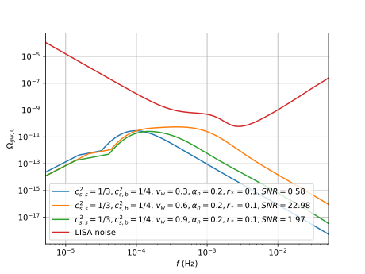

Generating gravitational wave spectra from equations of state for phase transitions in the early universe
Mika Mäki, Doctoral Researcher,
Computational Field Theory group, University of Helsinki
PAPU Winter Seminar
20.11.2025
In collaboration with David Weir, Mark Hindmarsh, Deanna Hooper & Lorenzo Giombi
Phase transitions in the early universe


- First-order: potential barrier
⇒ phase boundary ⇒ bubble nucleation - SM Higgs: crossover, BSM Higgs: first-order
⇒ Experimental testing of BSM theories
Different types of phase transition simulations
- Lattice simulations
- Capture multiple types of effects: bubble expansion, collision and turbulence
- Computationally expensive
- Analytical approximations
- Broken power law, double broken power law
- Useful but rather crude approximations
- Semi-analytical approximation: Sound Shell Model
- Captures dependence on phase transition parameters
- Reproduces the results of lattice simulations for intermediate-strength transitions
- This is what we are working on
Self-similar fluid shells

Source:
Hindmarsh et al. (2021,
arXiv:2008.09136),
hybrids discovered by Kurki-Suonio & Laine (1995,
arXiv:hep-ph/9501216)
Friction → constant $v_\text{wall}$ → self-similar solution
Three types of solutions, determined by
Three types of solutions, determined by
- Wall velocity $v_\text{wall}$
- Transition strength $\alpha_n$
- Speed of sound $c_s(T,\phi)$
Explanation of the figure
- Black circle: phase boundary, aka. bubble wall
- Colour: velocity of moving plasma
- $c_s$: speed of sound
- $v_\text{w}$: wall speed
- $c_\text{J}$: Chapman-Jouguet speed
From fluid profiles to GW spectra
🠮

Fluid shell velocity profiles
- Boundary conditions
- ODE integration
GW spectra
- Sound Shell Model: sine transform etc.
- Conversion to observable $f$ etc.
- Experimentally testable by LISA
PTtools & PTPlot
-
PTtools
- Simulation framework (Python library), doi:10.5281/zenodo.15268219
- Based on the Sound Shell Model by Hindmarsh et al.
- Developed by Mark Hindmarsh, Chloe Hopling (f.k.a. Gowling), Mika Mäki & Lorenzo Giombi
-
PTPlot
- Online plotting utility (Django web app), arXiv:1704.05871
- Developed by David Weir, Deanna Hooper, Jenni Häkkinen & Mika Mäki
-
Supports several models for the GW spectrum
- Broken power law
- Double broken power law (in development)
- Sound Shell Model (in development)
-
Input
- Equation of state: $p(T,\phi) = \frac{\pi^2}{90} g_p(T,\phi) T^4 - V(T,\phi)$
- Wall speed $v_\text{wall}$
- Transition strength parameter $\alpha_n \equiv \frac{4D\theta(T_n)}{3w_n} = \frac{4}{3} \frac{\theta_+(T_n) - \theta_-(T_n)}{w_n}$
- Hubble-scaled mean bubble spacing $r_* \equiv H_n R_*$
-
Output:
- GW power spectrum today $\Omega_{gw,0}(f)$
- Signal-to-noise ratio (SNR) plots
- Use case: estimate the likelihood of various Standard Model extensions with LISA data
Summary
- GW spectrum is an experimentally testable result of BSM theories
- The equation of state has a significant effect on the sound speed and therefore on the GW spectrum
- Sound Shell Model enables quick computation of the GW spectrum
-
Utilities:
- PTtools: https://pttools.readthedocs.io
- PTPlot: https://www.ptplot.org
Thank you!
Fluid velocity profiles
Fluid velocity profiles
GW power spectra
GW power spectra
GW power spectra today
GW power spectra today
PTPlot: Easy plotting of GW spectra
-
Online plotting utility, arXiv:1704.05871
- Based on the Python web framework Django
- Developed by David Weir, Deanna Hooper, Jenni Häkkinen & Mika Mäki
-
Supports several models for the GW spectrum
- Broken power law
- Double broken power law (upcoming)
- Sound Shell Model (upcoming)
Equations of state
- Equation of state for an ultrarelativistic plasma with multiple degrees of freedom $$p(T,\phi) = \frac{\pi^2}{90} g_p(T,\phi) T^4 - V(T,\phi)$$
-
The rest can be deduced with thermodynamics
-
Entropy density $s = \frac{dp}{dT}$,
enthalpy density $w = Ts$,
energy density $e = w - p$, sound speed $c_s \equiv \sqrt{\frac{dp}{de}}$
-
Entropy density $s = \frac{dp}{dT}$,
enthalpy density $w = Ts$,
- Bag model: equation of state with constant degrees of freedom $$p_\pm = a_\pm T^4 - V_\pm \quad \Rightarrow \quad c_s^2 \equiv \frac{dp}{de} = \frac{1}{3}$$
-
Constant sound speed model
(aka. $\mu, \nu$ model or template model, arXiv:2004.06995, arXiv:2010.09744) $$p_\pm = a_\pm \left( \frac{T}{T_0} \right)^{\mu_\pm - 4} T^4 - V_\pm {\color{gray} \approx a_\pm T^{\mu_\pm} - V_\pm } \quad \Rightarrow \quad c_{s\pm}^2 = \frac{1}{\mu_\pm - 1}$$ -
From an arbitrary particle physics model: $g_p(T,\phi), \ V(T,\phi)$
- This can also be done with e.g. WallGo (arXiv:2411.04970)
Sound Shell Model
- Hindmarsh (2018, arXiv:1608.04735), Hindmarsh & Hijazi (2019, arXiv: 1909.10040)
-
When the transition strength $\alpha_n \ll 1$ and $v_\text{wall} < 1$
- Sound waves are the majority contribution
→ collisions and turbulence can be neglected → no interaction between the bubbles
- Sound waves are the majority contribution